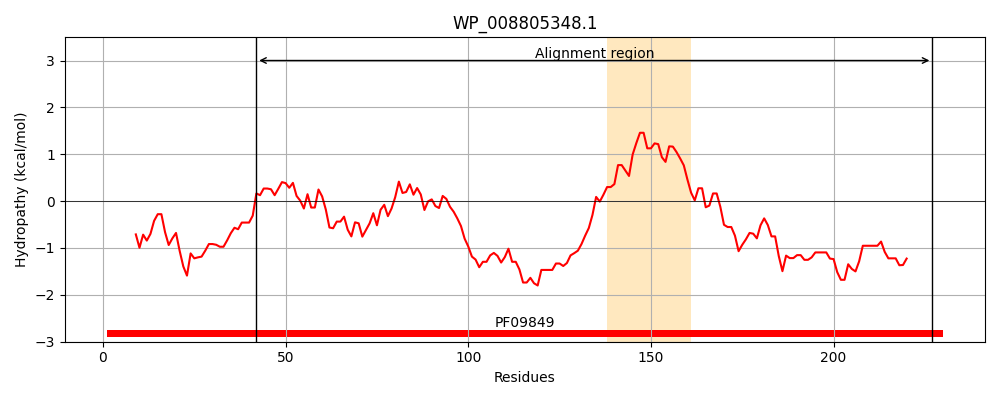
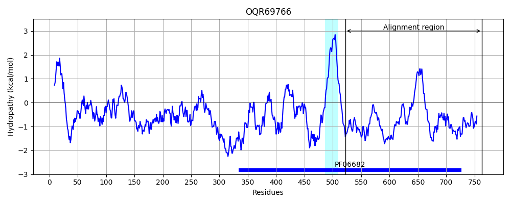
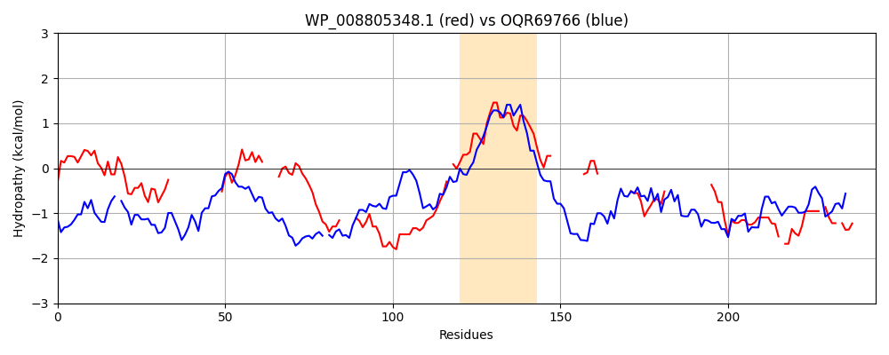

Hit Accession: OQR69766
Hit TCID: 8.A.111.1.6
Hit Description: gnl|BL_ORD_ID|8108 gnl|TC-DB|OQR69766.1|8.A.111.1.6 expressed hypothetical protein [Tropilaelaps mercedesae]
Mach Len: 244
e:0.000846
Query TMS Count : 1
Hit TMS Count: 1
TMS-Overlap Score: 0.000000
Predicted Substrates:None
BLAST Alignment:
Score: 91 , Bit scores: 39 bits, E-value: 8.5e-04, Alignment length: 244, Percentage identity: 26
Query: 42 PAAPYYMAQTILIQEAAIKQLNDRIQALESQVSQ---------------LQAAKPSSGGFLS----GLFGGGGSSRGSDPIPGAE----QYGRPQASAQPQYASPQQQPNYAPQAAA-RGGGFMAGALQTAAGVAGGVVLGNMLTNMF---------SGSHP---------QEIVNIIEEQP-------------QPDAAAQDATAGDDPFRQGDD-QFLADNTWNDD-FDAG-FGDDDIGSDD 227
P P A T + Q Q+N++ AL+ Q Q P+ GF + G + G S G P PG Y Q A YA P Q Q + R GG ++G A G A G + G + +M G H Q +++I+E P + D Q A D P D ++A +T+ DAG FGDDD G D
Sbjct: 522 PMPPMQPAPTPIYQPPQA-QMNNQAMALQQQSFQNPHSNPHPFAPPTYGADYVPPAGPGFTAPQPPGQYPPGQYSPGQYP-PGPSYPPGHYPSGQYPAAAPYAPPGQTATPVIQGQSNRSGGGLSGLGGLAVGAAAGGLAGYAIGSMMHHHGEHGSGEGGHESTTTADVEVQRDIDVIQEYPARGGMYGEADGGSRVDTYQQPTYASDQPVYASDQPSYVAPDTYEPPPLDAGGFGDDDFGGGD 763 | Protein Hydropathy Plots: |
|---|
|  |  |
Pairwise Alignment-Hydropathy Plot:
|
|---|
|  |